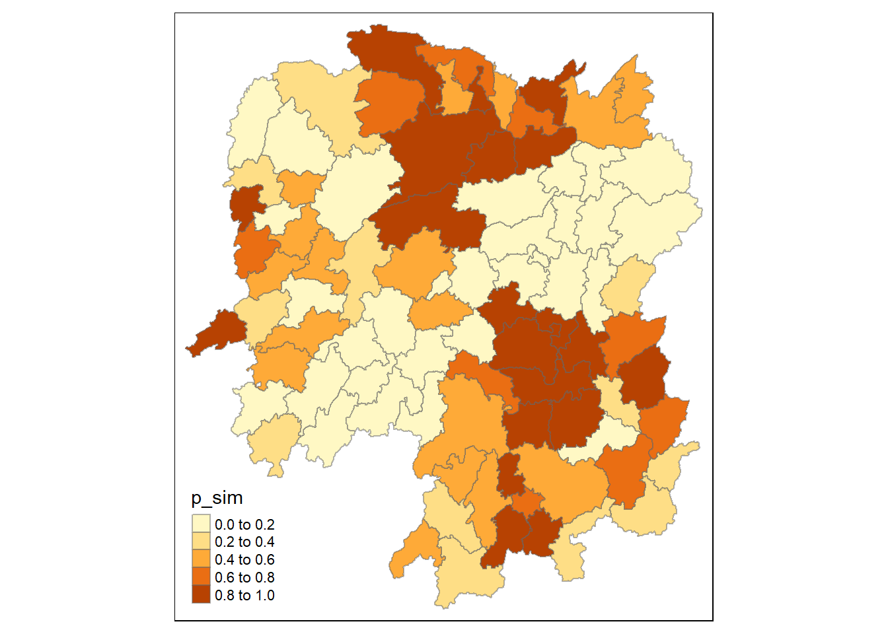
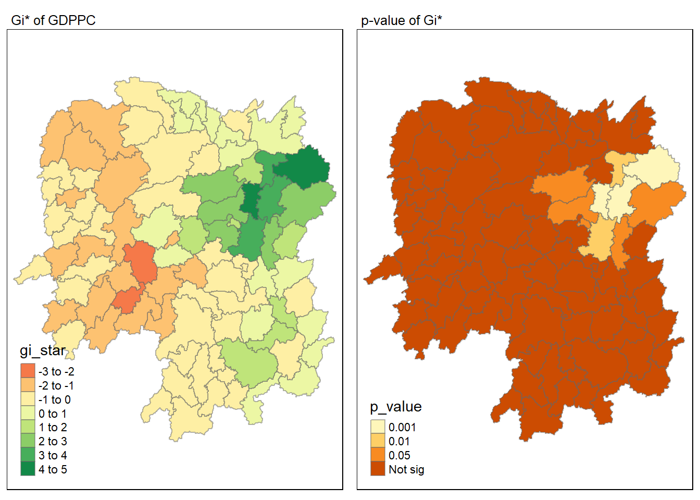

pacman::p_load(sf, sfdep, tmap, tidyverse)In Class Exercise 05
Data Sources
(saved under ‘data’ folder)
Hunan county boundary layer - geospatial dataset
Hunan_2012 - csv dataset containing Hunan’s 2012 local development indicators
Setting Up
Loading the R packages
Importing spatial data
# Load shapefile
hunan <- st_read(dsn = "data/geospatial", layer = "Hunan")Reading layer `Hunan' from data source
`C:\Users\Henry\Desktop\SMU Masters\2024-2025 T1\Geospatial Analytics & Applications\Project\GeospatialWebsite\In-Class_Ex\In-Class_Ex_05\data\geospatial'
using driver `ESRI Shapefile'
Simple feature collection with 88 features and 7 fields
Geometry type: POLYGON
Dimension: XY
Bounding box: xmin: 108.7831 ymin: 24.6342 xmax: 114.2544 ymax: 30.12812
Geodetic CRS: WGS 84# Check crs
st_crs(hunan)Coordinate Reference System:
User input: WGS 84
wkt:
GEOGCRS["WGS 84",
DATUM["World Geodetic System 1984",
ELLIPSOID["WGS 84",6378137,298.257223563,
LENGTHUNIT["metre",1]]],
PRIMEM["Greenwich",0,
ANGLEUNIT["degree",0.0174532925199433]],
CS[ellipsoidal,2],
AXIS["latitude",north,
ORDER[1],
ANGLEUNIT["degree",0.0174532925199433]],
AXIS["longitude",east,
ORDER[2],
ANGLEUNIT["degree",0.0174532925199433]],
ID["EPSG",4326]]# Check crs
glimpse(hunan)Rows: 88
Columns: 8
$ NAME_2 <chr> "Changde", "Changde", "Changde", "Changde", "Changde", "Cha…
$ ID_3 <int> 21098, 21100, 21101, 21102, 21103, 21104, 21109, 21110, 211…
$ NAME_3 <chr> "Anxiang", "Hanshou", "Jinshi", "Li", "Linli", "Shimen", "L…
$ ENGTYPE_3 <chr> "County", "County", "County City", "County", "County", "Cou…
$ Shape_Leng <dbl> 1.869074, 2.360691, 1.425620, 3.474325, 2.289506, 4.171918,…
$ Shape_Area <dbl> 0.10056190, 0.19978745, 0.05302413, 0.18908121, 0.11450357,…
$ County <chr> "Anxiang", "Hanshou", "Jinshi", "Li", "Linli", "Shimen", "L…
$ geometry <POLYGON [°]> POLYGON ((112.0625 29.75523..., POLYGON ((112.2288 …# Load csv file
hunan2012 <- read_csv("data/aspatial/Hunan_2012.csv")Rows: 88 Columns: 29
── Column specification ────────────────────────────────────────────────────────
Delimiter: ","
chr (2): County, City
dbl (27): avg_wage, deposite, FAI, Gov_Rev, Gov_Exp, GDP, GDPPC, GIO, Loan, ...
ℹ Use `spec()` to retrieve the full column specification for this data.
ℹ Specify the column types or set `show_col_types = FALSE` to quiet this message.# Check file
glimpse(hunan2012)Rows: 88
Columns: 29
$ County <chr> "Anhua", "Anren", "Anxiang", "Baojing", "Chaling", "Changn…
$ City <chr> "Yiyang", "Chenzhou", "Changde", "Hunan West", "Zhuzhou", …
$ avg_wage <dbl> 30544, 28058, 31935, 30843, 31251, 28518, 54540, 28597, 33…
$ deposite <dbl> 10967.0, 4598.9, 5517.2, 2250.0, 8241.4, 10860.0, 24332.0,…
$ FAI <dbl> 6831.7, 6386.1, 3541.0, 1005.4, 6508.4, 7920.0, 33624.0, 1…
$ Gov_Rev <dbl> 456.72, 220.57, 243.64, 192.59, 620.19, 769.86, 5350.00, 1…
$ Gov_Exp <dbl> 2703.0, 1454.7, 1779.5, 1379.1, 1947.0, 2631.6, 7885.5, 11…
$ GDP <dbl> 13225.0, 4941.2, 12482.0, 4087.9, 11585.0, 19886.0, 88009.…
$ GDPPC <dbl> 14567, 12761, 23667, 14563, 20078, 24418, 88656, 10132, 17…
$ GIO <dbl> 9276.90, 4189.20, 5108.90, 3623.50, 9157.70, 37392.00, 513…
$ Loan <dbl> 3954.90, 2555.30, 2806.90, 1253.70, 4287.40, 4242.80, 4053…
$ NIPCR <dbl> 3528.3, 3271.8, 7693.7, 4191.3, 3887.7, 9528.0, 17070.0, 3…
$ Bed <dbl> 2718, 970, 1931, 927, 1449, 3605, 3310, 582, 2170, 2179, 1…
$ Emp <dbl> 494.310, 290.820, 336.390, 195.170, 330.290, 548.610, 670.…
$ EmpR <dbl> 441.4, 255.4, 270.5, 145.6, 299.0, 415.1, 452.0, 127.6, 21…
$ EmpRT <dbl> 338.0, 99.4, 205.9, 116.4, 154.0, 273.7, 219.4, 94.4, 174.…
$ Pri_Stu <dbl> 54.175, 33.171, 19.584, 19.249, 33.906, 81.831, 59.151, 18…
$ Sec_Stu <dbl> 32.830, 17.505, 17.819, 11.831, 20.548, 44.485, 39.685, 7.…
$ Household <dbl> 290.4, 104.6, 148.1, 73.2, 148.7, 211.2, 300.3, 76.1, 139.…
$ Household_R <dbl> 234.5, 121.9, 135.4, 69.9, 139.4, 211.7, 248.4, 59.6, 110.…
$ NOIP <dbl> 101, 34, 53, 18, 106, 115, 214, 17, 55, 70, 44, 84, 74, 17…
$ Pop_R <dbl> 670.3, 243.2, 346.0, 184.1, 301.6, 448.2, 475.1, 189.6, 31…
$ RSCG <dbl> 5760.60, 2386.40, 3957.90, 768.04, 4009.50, 5220.40, 22604…
$ Pop_T <dbl> 910.8, 388.7, 528.3, 281.3, 578.4, 816.3, 998.6, 256.7, 45…
$ Agri <dbl> 4942.253, 2357.764, 4524.410, 1118.561, 3793.550, 6430.782…
$ Service <dbl> 5414.5, 3814.1, 14100.0, 541.8, 5444.0, 13074.6, 17726.6, …
$ Disp_Inc <dbl> 12373, 16072, 16610, 13455, 20461, 20868, 183252, 12379, 1…
$ RORP <dbl> 0.7359464, 0.6256753, 0.6549309, 0.6544614, 0.5214385, 0.5…
$ ROREmp <dbl> 0.8929619, 0.8782065, 0.8041262, 0.7460163, 0.9052651, 0.7…Merging both datasets
Both datasets have the common field “County”
# Merge both datasets
hunan_GDPPC <- left_join(hunan, hunan2012, by = "County") %>%
# select(1:4, 7, 15)
select(`NAME_2`, `ID_3`, `NAME_3`, `ENGTYPE_3`, `County`, `GDPPC`, `geometry`) # Using Column names for readability
# See result
glimpse(hunan_GDPPC)Rows: 88
Columns: 7
$ NAME_2 <chr> "Changde", "Changde", "Changde", "Changde", "Changde", "Chan…
$ ID_3 <int> 21098, 21100, 21101, 21102, 21103, 21104, 21109, 21110, 2111…
$ NAME_3 <chr> "Anxiang", "Hanshou", "Jinshi", "Li", "Linli", "Shimen", "Li…
$ ENGTYPE_3 <chr> "County", "County", "County City", "County", "County", "Coun…
$ County <chr> "Anxiang", "Hanshou", "Jinshi", "Li", "Linli", "Shimen", "Li…
$ GDPPC <dbl> 23667, 20981, 34592, 24473, 25554, 27137, 63118, 62202, 7066…
$ geometry <POLYGON [°]> POLYGON ((112.0625 29.75523..., POLYGON ((112.2288 2…# tm_shape(hunan_GDPPC)Global Measures of Spatial Association
Derive Queen’s contiguity weigths
wm_q <- hunan_GDPPC %>%
mutate(nb = st_contiguity(geometry), # Neighbour list object
wt = st_weights(nb, style = "W"),
.before = 1)# Dont do this in practise (no significant value)
moranI <- global_moran(wm_q$GDPPC,
wm_q$nb,
wm_q$wt)
moranI$I
[1] 0.30075
$K
[1] 7.640659# This has a test.
global_moran_test(wm_q$GDPPC,
wm_q$nb,
wm_q$wt)
Moran I test under randomisation
data: x
weights: listw
Moran I statistic standard deviate = 4.7351, p-value = 1.095e-06
alternative hypothesis: greater
sample estimates:
Moran I statistic Expectation Variance
0.300749970 -0.011494253 0.004348351 # Ensure reproducibility
set.seed(42)
# Permutation test
global_moran_perm(wm_q$GDPPC,
wm_q$nb,
wm_q$wt,
nsim = 99)
Monte-Carlo simulation of Moran I
data: x
weights: listw
number of simulations + 1: 100
statistic = 0.30075, observed rank = 100, p-value < 2.2e-16
alternative hypothesis: two.sidedLocal Measure
Local Moran’s I
lisa <- wm_q %>%
mutate(local_moran = local_moran(GDPPC, nb, wt, nsim = 99),
.before = 1) %>%
unnest(local_moran)
# eii - expected
# var_ii - variance
# z_ii - z score
# p_ii - p value
# p_ii_sim - p value from simulation
# p_folded_sim - k fold validation
# mean - if data follows normal distribution
# median - if data is skewedVisualize local Moran’s I
tmap_mode("plot")tmap mode set to plottingtm_shape(lisa) +
tm_fill("ii") +
tm_borders(alpha = 0.5) +
tm_view(set.zoom.limits = c(6, 8)) +
tm_layout(
main.title = "local Moran's I of GDPPC",
main.title.size = 0.8
)Variable(s) "ii" contains positive and negative values, so midpoint is set to 0. Set midpoint = NA to show the full spectrum of the color palette.
Visualize p-value of local Moran’s I
tmap_mode("plot")tmap mode set to plottingtm_shape(lisa) +
tm_fill("p_ii_sim") +
tm_borders(alpha = 0.5) +
tm_layout(
main.title = "p-value of local Moran's I",
main.title.size = 0.8
)Visualize them together
tmap_mode("plot")tmap mode set to plottingmap1 <- tm_shape(lisa) +
tm_fill("ii") +
tm_borders(alpha = 0.5) +
tm_view(set.zoom.limits = c(6, 8)) +
tm_layout(
main.title = "local Moran's I of GDPPC",
main.title.size = 0.8
)
map2 <- tm_shape(lisa) +
tm_fill("p_ii_sim") +
tm_borders(alpha = 0.5) +
tm_layout(
main.title = "p-value of local Moran's I",
main.title.size = 0.8
)
tmap_arrange(map1, map2, ncol = 2)Variable(s) "ii" contains positive and negative values, so midpoint is set to 0. Set midpoint = NA to show the full spectrum of the color palette.LISA Map
lisa_sig <- lisa %>%
filter(p_ii < 0.05)
tmap_mode("plot")tmap mode set to plottingtm_shape(lisa) +
tm_polygons() +
tm_borders(alpha = 0.5) +
tm_shape(lisa_sig) +
tm_fill("mean") +
tm_borders(alpha = 0.4)Warning: One tm layer group has duplicated layer types, which are omitted. To
draw multiple layers of the same type, use multiple layer groups (i.e. specify
tm_shape prior to each of them).Compute local Gi* Statistics
wm_idw <- hunan_GDPPC %>%
mutate(nb = st_contiguity(geometry),
wts = st_inverse_distance(nb, geometry,
scale = 1,
alpha = 1),
.before = 1)! Polygon provided. Using point on surface.Warning: There was 1 warning in `stopifnot()`.
ℹ In argument: `wts = st_inverse_distance(nb, geometry, scale = 1, alpha = 1)`.
Caused by warning in `st_point_on_surface.sfc()`:
! st_point_on_surface may not give correct results for longitude/latitude data# Compute local Gi
HCSA <- wm_idw %>%
mutate(local_Gi = local_gstar_perm(GDPPC, nb, wt, nsim = 99),
.before = 1) %>%
unnest(local_Gi)
HCSASimple feature collection with 88 features and 18 fields
Geometry type: POLYGON
Dimension: XY
Bounding box: xmin: 108.7831 ymin: 24.6342 xmax: 114.2544 ymax: 30.12812
Geodetic CRS: WGS 84
# A tibble: 88 × 19
gi_star cluster e_gi var_gi std_dev p_value p_sim p_folded_sim skewness
<dbl> <fct> <dbl> <dbl> <dbl> <dbl> <dbl> <dbl> <dbl>
1 0.0416 Low 0.0112 0.00000671 0.0972 9.23e-1 0.66 0.33 1.18
2 -0.333 Low 0.0115 0.00000836 -0.358 7.20e-1 0.88 0.44 0.742
3 0.281 High 0.0125 0.00000952 -0.0940 9.25e-1 0.88 0.44 0.858
4 0.411 High 0.0118 0.00000880 0.278 7.81e-1 0.76 0.38 0.785
5 0.387 High 0.0118 0.00000971 0.241 8.10e-1 0.62 0.31 1.33
6 -0.368 High 0.0114 0.00000540 -0.432 6.66e-1 0.84 0.42 0.414
7 3.56 High 0.0157 0.00000999 2.06 3.94e-2 0.06 0.03 0.809
8 2.52 High 0.0135 0.00000444 1.78 7.46e-2 0.12 0.06 0.593
9 4.56 High 0.0141 0.00000433 4.25 2.10e-5 0.02 0.01 0.534
10 1.16 Low 0.0110 0.00000438 1.41 1.59e-1 0.2 0.1 0.683
# ℹ 78 more rows
# ℹ 10 more variables: kurtosis <dbl>, nb <nb>, wts <list>, NAME_2 <chr>,
# ID_3 <int>, NAME_3 <chr>, ENGTYPE_3 <chr>, County <chr>, GDPPC <dbl>,
# geometry <POLYGON [°]>Visualize gi*
tmap_mode("plot")tmap mode set to plottingtm_shape(HCSA) +
tm_fill("gi_star") +
tm_borders(alpha = 0.5) +
tm_view(set.zoom.limits = c(6, 8))Variable(s) "gi_star" contains positive and negative values, so midpoint is set to 0. Set midpoint = NA to show the full spectrum of the color palette.
tmap_mode("plot")tmap mode set to plottingtm_shape(HCSA) +
tm_fill("p_sim") +
tm_borders(alpha = 0.5) +
tm_view(set.zoom.limits = c(6, 8))
HCSA_sig <- HCSA %>%
filter(p_sim < 0.05)
tmap_mode("plot")tmap mode set to plottingtm_shape(HCSA) +
tm_polygons() +
tm_borders(alpha = 0.5) +
tm_shape(HCSA_sig) +
tm_fill("cluster") +
tm_borders(alpha = 0.4)Warning: One tm layer group has duplicated layer types, which are omitted. To
draw multiple layers of the same type, use multiple layer groups (i.e. specify
tm_shape prior to each of them).